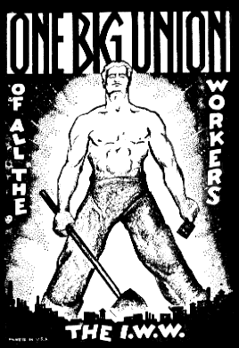

"Virile Syndicalism" in Comparative Perspective: a Gender Analysis of the IWW in the United States and Australia
By Francis Shor - Wayne State University, March 14, 1998.[1]
It is no coincidence that syndicalism emerges in a historical period when industrial discipline, economic efficiency, and social regularization are the guiding imperatives in the reconstruction of power and authority in the workplace. The syndicalist tendencies that mark the working-class response to this early twentieth century effort at reconstituting workplace rules and regulations not only arise to combat capitalism but also to contest the respectable reformism of craft based labor unions. 'Syndicalism," as Wayne Thorpe argues, "was simultaneously a contributing cause, a symptom, and a beneficiary of dissatisfaction with the dominant labor strategies of the period."[2] Furthermore, as David Montgomery contends: "Revolutionary syndicalism extracted from the solidarities and ethical code of workers' daily lives a merciless critique of the existing structures of exploitation, power, and authority. It did not spare the institutions that workers had created for themselves."[3]
The Industrial Workers of the World (IWW or "Wobblies"), which originated in the United States in 1905 but spread throughout the industrialized world soon thereafter, grew out of these syndicalist currents. As the 1905 call to the founding convention opined:
Universal economic evils afflicting the working class can be eradicated only by a universal working class movement. Such a movement is impossible while separate craft and wage agreements are made favoring the employer against other crafts in the same industry, and while energies are wasted in fruitless jurisdictional struggles which serve only to further the personal aggrandizement of union officials.
A movement to fulfill these conditions must consist of one great industrial union embracing all industries.... It must be founded on the class struggle, and its general administration must be conducted in harmony with the recognition of the irrepressible conflict between the capitalist class and the working class.[4]
These syndicalist currents that course through the IWW not only propel the Wobblies into an obsession with direct action and sabotage but also conjure up a vestigial gendered form of protest. As Peter Stearns suggests: "For many in the working class, uncertain about their manly status in the workplace, periodic protest, shared among brothers, was a vital way to claim their masculinity, a reward in itself."[5] Such a gendered form of protest, an enactment of what I will call "virile" syndicalism, is reflected in the following lyrics written by the Swedish immigrant and Wobbly balladeer and martyr, Joe Hill:
Would you have freedom from wage slavery,
Then join in the grand Industrial band;
Would you from mis'ry and hunger be free,
Then come, do your share, like a man.
(Chorus):
There is pow'r, there is pow'r
In a band of workingmen,
When they stand hand in hand
That's a pow'r, that's a pow'r
That must rule in every land
One Industrial Union Grand.[6]
In order to elaborate what is meant by "virile" syndicalism, we must look at how power and authority are constituted in early twentieth century industrial societies. While both class and gender analyses recognize changing historical conditions, interpretations of power and authority must be reconceptualized beyond productivist models. To understand fully the implications of the struggle over gender identity represented by the virile syndicalism of the IWW in their discourse and campaigns, I want to propose adopting some of the heuristic insights of Michel Foucault. In particular, Foucault's insistence on seeing power as a shifting strategic force field helps to apprehend how gender and class become part of the microphysics of struggle. Moreover, Foucault's approach to how authority is internalized through "individualizing techniques of power" contributes immensely to discerning the ways in which masculine identity can become, especially during crisis periods such as that around World War One, a battleground over differing versions of manhood.[7]
In light of the above, the Wobblies' insistence on direct action and sabotage should be viewed as central both to their contesting power and authority and to their projection of a "virile" syndicalism. While more often a rhetorical rather than fully developed strategy, IWW discussion of sabotage illuminated its struggle against industrial discipline and "speed-ups." From Arturo Giovannitti's metaphoric and more aggressive definition of sabotage as "the chloroforming of the organism of production" to Elizabeth Gurley Flynn's more prosaic and passive definition as "the withdrawal of efficiency," IWW organizers pushed sabotage even after it unleashed a torrent of criticism from within labor and socialist circles.[8] I would suggest that the vehemence of the criticism of IWW strategy and tactics from reformist and even socialist labor leaders is in part a question of contending definitions of what it means to be a man inside and outside the workplace. For the Wobblies, the fight against efficiency and discipline meant, at least at the discursive level, a total rejection of bourgeois standards of order, bearing, and self-development, all intimately connected with gender identity. The will-to-power of "virile" syndicalism preached by the IWW in their advocacy of sabotage not only riled capitalist bosses and labor bureaucrats but also was intended, in the words of Wobbly propagandist Walker Smith, "to show that the workers should rid their minds of the last remnant of bourgeois cant and hypocrisy and by its use [i.e., sabotage] develop courage and individual initiative."[9]
While I am prepared to argue that the IWW promotion of sabotage represents a kind of masculine posturing which directly challenged the individualizing techniques of power mobilized by industrial capitalism, it would be particularly undialectical to suggest that only men fought and fretted over industrial discipline or that industrial discipline was isolated from the general social institutionalization of discipline that was part of the modern world.[10] Certainly, the IWW experience, more especially in the United States than anywhere else, grew out of preexisting ethnic and gender networks that empowered members of the working class at particular historical moments of social protest.[11] However, Wobbly references, usually by IWW men, to Paul Lafarge's pamphlet, The Right to Be Lazy, and to the refrain, "Hallelujah, I'm a Bum," from the song of the same name, reflect a transvalued gendered response to the preeminent masculine ideal of hard work and self-discipline. Thus, the discourse and dramatic activities of the IWW not only illustrate the struggle over defending and extending working-class rights and privileges but also manifest a fight over what it means to be a working-class man in a particular historical situation.
In attempting to define the gender identity that circumscribed the "virile" syndicalism of the IWW, there are several fundamental points about gender and masculinity that must be emphasized. First of all, gender, like class, is never fixed for all time; rather, it remains both dynamic and problematic. Moreover, while a particular version of masculinity may be hegemonic in any society, that hegemony is not without its internal contradictions, complexities, and even challenges at certain historical moments.[12] In fact, I will argue that the contested terrain upon which a variety of definitions of masculinity contended during the early twentieth century industrial world helps to explain both the attraction of the IWW to certain categories of men and the revulsion and near hysteria of others to the IWW. Thus, the IWW's masculine identity incorporated features of working-class solidarity and protest that resonated both in Joe Hill's lyrics and the community of discourse that enveloped the Wobblies' commitment to a form of oppositional masculinism through "virile" syndicalism.
The IWW in Comparative Perspective
Comparative history, particularly at crucial moments of world-historical change, offers the possibility of identifying underlying connections and opening up more inclusive perspectives on continuity, crisis, and change. As James T. Kloppenberg argues in his comparative study of social democracy and progressivism in European and American thought between 1870 and 1920: "Although the parallels never be exact because of individual idiosyncrasies, distinctive cultural traditions, and the inevitable complications arising from problems of translation, comparative analysis can kindle new insights from ideas grown stale in conventional classifications."[13]
In locating the contours of Australian and US comparative history, numerous commentators have acknowledged the similarities underlying both societies as white settler democracies with continental frontiers and mass immigration. Critical differences that influenced the history of labor in both countries were connected to a less interventionist state in the United States, especially when it came to mitigating economic and social inequities, and a more active state in Australia, especially in the institutionalization of mediation and arbitration in the late nineteenth and early twentieth centuries. Finally, a more organized labor movement and the rise of the Labor party in Australia in the late nineteenth century and its electoral successes at state and federal levels in the early twentieth century provided a vehicle for working-class aspirations, albeit flawed, as will be discussed below.[14]
In order to explore the comparative nature of oppositional masculinism and virile syndicalism, I want to examine the role of the IWW in the United States and Australia in the period 1914-1917, a period when the IWW achieved influence as a consequence of contesting power at the point of production and beyond. Especially evident in such challenges was a gender discourse that gained even more prominence during the heated debates concerning World War One and conscription. While the IWW in Australia played a more seminal role in opposing World War One than did the US IWW, both national formations of Wobblies attacked all forms of servility, especially those related to the overheated patriotism of the time.[15]
Another crucial factor in comparing the "virile" syndicalism of the US and Australian IWW is the much greater role that racial/ethnic segmentation and conflict played in the United States. While both Australian and American Wobblies espoused antiracist positions through their emphasis on working-class solidarity, such antiracism often presented itself, especially in the United States, as an effort to transcode notions of masculinity. An example of this is an organizing campaign among timber workers in Louisiana. When Wobbly organizer Ed Lehman confronted a white worker concerning whether there were any "niggers" in the IWW-affiliated Brotherhood of Timber Workers, Lehman defended a fellow worker who happened to be black against racist accusations by charging: "He is a man, a union man, an IWW--a MAN! . . . and he has proven it by his action, [which is] more than you have done in all your boss-sucking life."[16] While achieving a modicum of success in this organizing instance, contesting racial/ethnic and class conflict among workers often made it difficult for the US IWW to expand its form of oppositional masculinism and "virile" syndicalism.
On the other hand, the Australian IWW involvement in spreading "virile" syndicalism reveals much about the discursive terrain and social conditions out of which working-class discontent was articulated. The IWW there came to prominence on a wave of working-class mobilization and discontent over the harshness of industrial capitalism, the betrayal of labor politicians, and the disruption caused by World War One. Although never larger than several thousand members and without the formal organizational structure that developed in the American IWW, the Australian Wobblies were able to capitalize on a militant community of discourse and preexisting radical working-class networks, particularly in mining towns like Broken Hill, that embodied syndicalist sentiments and produced forms of social protest such as anticonscription demonstrations and strikes during this period.[17]
While the IWW in the United States was a much larger organization, mobilizing tens of thousands of workers in massive strikes such as Lawrence, Massachusetts, and Paterson, New Jersey, in the pre-1914 period, the start of the war found the IWW moving away from the large factories of the East, where men and women often worked in nearly equal numbers, to the Midwest wheat fields, the mines of the West and Southwest, and the timber ranges of the Northwest where men predominated. The sense of gendered solidarity in these mining and migratory camps has been described in the following manner: "Working together a thousand feet below the ground, living together in crowded bunkhouses, and drinking, gambling, and whoring together far from the ties of conventional society, the miners developed bonds that most men never know, a brotherhood forged in blood."[18] The IWW fulfilled a significant social function that not only established brotherly bonds of solidarity but also provided opportunities to experience a form of cultural empowerment that signaled to many wandering men that they were more than hired hands or mere cogs in a machine. John Reed, the American radical journalist, noted this cultural component when he commented: "Whenever, in the West, there is an IWW local, you will find an intellectual center--a place were men read philosophy, economics, the latest plays: where art and poetry are discussed and international politics."[19]
One could also find this gendered solidarity "down under." Tom Barker, an IWW organizer and propagandist in Auckland and Sydney, recounted the function of the IWW locals in Australia: "Migratory people looked for support when they came to a new place and if they found an IWW branch they knew they were amongst friends, and that created a spirit of solidarity that was something more than words."[20] That something more than words was, according to Direct Action, the voice of the Australian IWW, a desire "to seize the growing discontent and organize it for revolutionary purposes."[21] Although the IWW in Australia and the United States used its gendered communal base to "fan the flames of discontent,,' as American Wobbly leader "Big Bill" Haywood noted in a letter to Direct Action: "Your country is situated [so] that capitalism has not yet got a strangle hold upon the workers such as it has in this country, and the workers should take more readily to the agitation."[22]
Partly as a consequence of the legalization of trade unions in Australia through the establishment of the Arbitration Court and the success of a Labor party at both the state and federal level, the IWW in Australia did not have to worry about organizing for recognition as a trade union as it did in the United States.[23] The focus, instead, became the interventionist state and the reconstitution of power and authority over workers as employees and citizens. In claiming that "the Australian IWW were the first revolutionary trade union movement who saw their main enemy as state paternalism, democracy in its 'enlightened' aspects, and set themselves to oppose security in the name of initiative and job control," historian Ian Bedford apprehends the syndicalist thrust of the IWW message. At the same time, however, he neglects how that message incorporated a gendered discourse.[24] As we will see, the revolutionary agitation of the IWW in Australia evoked traditional concepts of manhood under siege by new forms of power and authority while promoting an oppositional masculinism represented in its own "message of virility, strength, and unconquerable optimism."[25]
Understanding the kind of labor militancy and oppositional masculinism articulated and practiced by the Australian IWW requires acknowledging both the hegemonic meaning of what Australian feminist scholars Rosemary Pringle and Sophie Watson call "the fraternal state" and the transvaluation of notions of bourgeois manhood into the specific posturing of "virile" syndicalism.[26] Emerging from within the fraternal state at this time was a recognition by working-class revolutionaries, such as those in the IWW, that the thrust of the state was in the direction of servility. In an article appearing under the byline of "Ajax," the Australian Wobbly paper attacked the contemporary idolatry of the state, claiming that such "deification of the State leads to the servile State." According to Ajax, only "when the psychology of the mass becomes virile" will the state and all its institutions of authority wither away.[27]
Posing the working-class militancy and "virile" syndicalism of the IWW against groveling before an increasingly intrusive and "emasculating" state, the Wobbly paper and its writers hammered home the empowering gendered message of direct action. According to Ajax: "Direct action implies that a group or class refuse to abide by the rules of their alleged superiors . . . [and instead] have the intelligence to rely on themselves, knowing what they want and the correct method to obtain it."[28] This emphasis on direct action against the state in effect turned into a fraternal civil war over the proper role of power and authority and contending versions of masculinity.
A major battleground over masculinity materialized within the ranks of labor. The IWW leadership in Australia, much like that in the United States, denounced and parodied reform labor leaders. In Australia, however, reform labor leaders such as William Holman and William Hughes went on to become political rulers who in turn viciously attacked the IWW. The vision of power and authority held by Holman and Hughes and their own commitment to forms of self-discipline and respectability provide an insight into contending versions of masculinity that appeared in labor circles during this period. Holman, who was the Labor party premier of New South Wales at the time of the rise of the Australian IWW, had earlier expressed a perception of the deportment of socialists in industrial relations that conveys his sense of how proper and civilized men should conduct themselves. "The Socialist worker," Holman argued, "would have to obey his overseer in the short, daily working period in the same way as the present worker; but with this difference, that the Socialist overseer would be a man chosen as such for his superiority and fitness, not a brutal individual whom accident has made into a tyrant; he would be a gentleman ruling over gentleman."[29] This commitment to deference and respectability, evoked in Holman's vision, was, of course, anathema to the IWW.
Just as the IWW mocked such attitudes as capitulation to bourgeois order and its attendant character structures (often parodied in the Wobbly press through the cartoon figure of Mr. Block), so politicians like Holman and Hughes sought to use the IWW as a whipping boy for their imposition of conscription. Using the repressive apparatus of the state, Hughes initiated legislation in late 1916 to outlaw the IWW. Hughes's rhetoric at the time betrays not only an opportunistic effort to mobilize support for this repression, but also a hegemonic masculinist and nationalist version of moral panic. "I say deliberately that the organization [the IWW] holds a dagger at the heart of society," Hughes dramatically dissembled, "and we should be recreant to the social order if we do not accept the challenge it holds out to us. As it seeks to destroy us, we must in self-defence destroy it."[30]
The fight over passage of conscription in Australia took on the components of a moral crusade for both sides. While the IWW was not the only nor even the most important working-class organization that mobilized against conscription (thereby helping to defeat the conscription referenda of 1916 and 1917), it articulated the most radical and uncompromising denunciation of conscription.
Conscription is a devouring monster, which, when established in a country spreads disease, crime, and pestilence wherever it sets its filthy paw. It is a dangerous enemy to the working class, and will set back progress for many years; it will mean the shattering of many working class organizations, and the silencing of labour agitators; it will mean the suppression of many liberties we now enjoy which members of our class have fought and bled and died for.[31]
The image of conscription as a beast not only embodies a conventional metaphor for that which engenders moral degradation and pollution but also implies that proponents of conscription are less than men. According to IWW propaganda, the real desecrators of manhood are those who would lead "unthinking slaves" into the abyss of war while saving "their cowardly carcasses."[32] Direct Action editorialized that "[c]onscription denies man's ownership of his body. It violates the integrity of his soul."[33]
Such a metaphysical allusion to the soul might suggest that the Australian IWW was engaged in religious combat. While some may read such apocryphal language as indicative of Wobbly religiosity, I want to suggest that it represents more of a historically situated sensibility of masculine identity.[34] Thus, the reference to ownership of one's body and protection of one's dignity in the previous paragraph reveals more about the problematic of manhood than the problematic of the soul. Against the backdrop of the dehumanizing tendencies of industrial society and the interventionist state, the IWW attacks such tendencies and says that salvation and dignity lie in joining the IWW. A kind of oppositional masculinity and a brotherhood of working-class solidarity are called for. Direct Action asserts that the "IWW is the most virile labour union in existence." It says, "Fellow worker if you want to be a man and not a slave get into the IWW and do your share in the Fight for Freedom." It recalls the lyrics of "There is Power in a Union" and proclaims that the struggle to be a man requires contesting power at every level of society, starting with control over one's body.[35]
Nowhere did the struggle over the microphysics of power and control of the body create more immediate responses with more profound implications for the very character structure of the worker than in the reconstitution of the nature and pace of work. Combating these new oppressive routines by embracing sabotage was not only a necessary challenge to the power and authority of the capitalist but also a ritualistic test by which one could claim one's own manhood. By posing the choice of "sabotage or slavery," an article in Direct Action asks: "Will you keep private property and public property, master class morals and working class misery, capitalism and crime--or will you arise in your outraged manhood and take a stand for sabotage, solidarity and a new social order in which there will be neither master nor slave?"[36] Contesting in particular the coming of scientific management led one Australian Wobbly to the following insights about the character-structure repercussions of such methods:
The more the workers become slaves to 'scientific methods of work' the less use there will be for slave drivers. The latter were only essential as long as the worker had some human instincts left, the instinct of revolt . . . and the instinct to differentiate himself from a cog in the mammoth capitalist machine.[37]
That the IWW often took the lead in appealing to the primordial instincts of working men against the assault of the new individualizing techniques of power embedded in scientific management and other changes in industrial capitalism put them in the forefront of direct action campaigns in Australia and the United States. While such "virile" syndicalism might have temporary appeals to more conservative unionists, the IWW trumpeted its revolutionary message against those who would control workers either at the point of production or through the authority of the state. "If in their stress on direct action and workers' control the Wobblies resembled the skilled workers in the craft unions of the AFL [American Federation of Labor]," argues historian Melvyn Dubofsky, "they distinguished themselves from their more respectable brothers and sisters in the labour movement by a disdain for 'bourgeois law' and a total commitment to revolution."[38] As a reflection of this attitude, one of the American Wobbly newspapers boldly proclaimed: "The IWW is more than a labor organization. It is a revolutionary union and the very word revolutionary supposes something radically different from former concepts of what constitutes labor unions."[39]
In its efforts to project a revolutionary syndicalism, the IWW faced unbelievable resistance and repression, especially once World War One ensued. The war exacerbated tendencies both in the state and the IWW that, to some extent, reconstituted the terrain on which such political antagonism was played out. For the IWW, the war had a dual effect of providing both opportunities and perils. The opportunities can be attributed to the labor shortage and the increased production of food, lumber, and copper--all in areas where the IWW rose to the occasion to organize. In the aftermath of the US declaration of war in 1917, one member from the state of Washington wrote: "I hope this damn war business is not going to set us back, as the prospect for the IWW looks very bright."[40] According to Wobbly leader Ralph Chaplin, "In the early spring of 1917 harvest stiffs were joining the IWW Agricultural Workers Organization at the rate of five thousand a month."[41]
By 1917, however, preparations for war brought into sharper focus a much more pointed Wobbly discourse on class and gender issues. Soon after Ralph Chaplin took over the editorship of Solidarity, the leading IWW newspaper of the time, he penned an editorial on "Preparedness" that spelled out the IWW's explicit commitment to class war and revealed their implicit oppositional masculinist orientation. "If you are seeking preparedness," the editorial opined, "'Join the IWW.' You will never have a better chance than Now. Take your place with your fellow workers in the trenches of the industrial warYour war--and show that you are made of the stuff that men are made Of "[42] The IWW emphasis on manhood as an expression of a militant working-class sensibility was further reflected in the Wobbly slogan, "Don't Be a Soldier! Be a Man!" After conscription was passed into law in the United States in May of 1917, Solidarity published an article by J. Stephen Dodd entitled "Soldiers Are Wanted" that proclaimed: "The IWW is the army of the militant working class," and urged members "to enlist for the terms of the war."[43]
Anticipating possible persecution because of its militancy, the IWW leadership tried to tone down its discussion of sabotage and antiwar activity. Although Haywood insisted that World War One was "of small importance compared to the great class war," he went on to assert that the IWW "shall continue to fight for the emancipation of the working class, despite all other circumstances."[44] It was the continuance of that fight, especially through the discourse of "virile" and revolutionary syndicalism, that resulted in the IWW bearing the full brunt of repression. As noted by historian William Preston: "In the wartime hysteria of 1917, Americans were in no mood to accept reasonable interpretations of the inflammatory and incendiary prose by which the IWW had lived.... By emphasizing the continuing war with the master class and by refusing to abandon the right to strike, the IWW retained the very concepts that were to ensure its suppression."[45]
The repression meted out against the IWW was both legal and extralegal. The most egregious and massive vigilante action during World War One against the Wobblies took place in Bisbee, Arizona, where on an early morning in July 1917 over 2,000 vigilantes rounded up 1,200 suspected Wobblies (killing several in the process) and deported them in cramped boxcars to the desert of neighboring New Mexico. In the IWW written response to the massive deportation found in the pages of Solidarity, there is a coming together of the discursive currents that defined the Wobbly sensibility and its oppositional politics during the war. In an article entitled "The Iron Heel at Work" and in a subsequent editorial, Solidarity issued the following declamatory broadside:
Yes, workers of America, these machine guns used by the mob of scabs, gunmen, businessmen, and professional Christians, belonged to the State of Arizona. They were confiscated by the copper corporations, who said, "we are the state,': and they proved it, proved it by overriding every law ever placed upon the statute books of the state....
Most clearly than anything that has happened in decades, this act of lawless thuggery shows that the big business interests of the US feel justified in setting aside the laws of the nation at will.... It is a piece of Prussian frightfulness brought home to the workers of America by their industrial overlords.
The cherished traditions of 'American manhood' and Anglo-Saxon fair play have been shattered to bits. The fundamental rights of American citizens have been revoked by the plug-uglies of a great corporation. And these things have been done under the mask of loyalty and with the convenient excuse of patriotism.[46]
Solidarity's denunciation of the Bisbee deportation indicates several ways in which the war environment reinforced tendencies within the IWW that ultimately undermined its potential as an inclusive social movement. In its emphasis on reclaiming manhood and protecting working-class masculinity, the IWW attempted to counter the state-sponsored machismo of militarism and patriotism. By transcoding what manhood meant to a militant and solidaristic working class, the IWW tried to carve out an alternative or oppositional masculinism. However, in the process, the IWW downplayed the critical role that women performed in sustaining any social movement and, in particular, in promoting the communal interests so necessary to the IWW's success as a social movement.[47]
Both in the United States and Australia, the IWW, especially in the period from 1914 to 1917, pitched its propaganda and engendered its identity on the basis of "virile" syndicalism. Such a discourse and identity compelled the IWW to engage in rituals of manhood through the rhetoric of sabotage and direct action campaigns. Engaging in struggles at the level of the microphysics of power, the IWW represented an important militant fraction of the wave of social protest and revolutionary syndicalism that swept over the industrial world around the time of World War One. And as a consequence of the passions and policies unleashed by the war, the IWW in the United States and Australia suffered tremendous repression, including the imprisonment of its top leadership and the outlawing of the organization. As a result, the IWW in the United States and Australia did not survive as a vibrant and virile movement.[48]
[1] This is a revision of a keynote address delivered on March 14,1998, at the International Conference on Syndicalism in Stockholm. I want to thank the organizers and participants of the Conference for their support and feedback. Also, I would like to acknowledge the helpful suggestions and comments by the anonymous reader for ILWCH and by its editors.
[2] Wayne Thorpe, "The Workers Themselves": Revolutionary Syndicalism and International Labour, 1913-1923 (Dordrecht, The Netherlands, 1989), 30. On the historical and international context for the emergence of syndicalism, see Marcel van der Linden and Wayne Thorpe, eds., Revolutionary Syndicalism: An International Perspective (Aldershot, England, 1990).
[3] David Montgomery, The Fall of the House of Labor The Workplace, the State, and American Labor Activism, 1865-1925 (New York, 1987), 310.
[4] Industrial Workers of the World, Proceedings of the First Convention of the Industrial Workers of the World (New York, 1905), s-6.
[5] Peter Stearns, Be a Man! Males in Modern Society, 2nd ed. (New York, 1990),100.
[6] Joe Hill, "There is Power in a Union," in Songs of the Workers, 34th ed. (Chicago, 1974),
[7] For an introduction to Foucault's perspectives on power as a strategic force field and the "individualizing techniques of power", see his Discipline and Punish: The Birth of the Prison, trans. Alan Sheridan (New York, 1977); The History of Sexuality, Volume 1: An introduction, trans. Robert Harley (New York, 1978); and "The Subject of Power," in Michel Foucault: Beyond Structuralism and Hermeneutics, ed. Hubert L. Dreyfus and Paul Rabinow (London, 1982), 208-26. Helpful explications and critiques of Foucault's work in this area can be found in Barry Smart, Foucault, Marxism, and Critique (London, 1983); and Mark Poster, Foucault, Marxism, and History: Mode of Production Versus Mode of Information (Cambridge, 1984), 95-145. On the connections between Foucault's strategic force field and the role of gender in history and politics, see Joan Wallach Scott, Gender and the Politics of History (New York, 1988), 42.
[8] Giovannitti's definition of sabotage can be found in his "Introduction" to Emile Pouget's Sabotage (Chicago, 1913), 14. Flynn's definition is in her pamphlet on Sabotage (Cleveland, 1915), 5. On the criticism by elements of the Socialist party (USA) of the IWW embrace of sabotage and consequent expulsion of the Wobbly leader "Big Bill" Haywood from the Executive of the party over that issue, see Peter Carlson, The Life and Times of Big Bill Haywood (New York, 1983), 196-200.
[9] Walker C. Smith, Sabotage (Sydney, n.d.), 8.
[10] On the general institutionalization of discipline in modern industrial society, see Michelle Perrot, "The Three Ages of Industrial Discipline in Nineteenth Century France," in Consciousness and Class Experience in Nineteenth Century Europe, ed. John M. Merriman (New York, 1979), 149-68. On women's response to this discipline in industrial and neighborhood settings in the United States, see Ardis Cameron, Radicals of the Worst Sort: Laboring Women in Lawrence, Massachusetts, 1860-1912, (Chicago, 1993).
[11] On preexisting gender and ethnic networks in the US IWW experience, see the essays in Joseph R. Conlin, ea., At the Point of Production: The Local History of the IWW (Westport, CT, 1981); David J. Goldberg, A Tale of Three Cities: Labor Organization and Protest in Paterson, Passaic, and Lawrence, 1916-1921 (New Brunswick, NJ, 1989); and Cameron, Radicals of the Worst Sort.
[12] On the dynamic nature of masculine identity, see Arthur Brittan, Masculinity and Power (New York, 1989), 37 and passim. On the "problematic" of manhood, see David S. Gilmore, Manhood in the Making: Cultural Concepts of Masculinity (New Haven, CT, 1990). For an excellent overview of the various cultural meanings of manhood in the late nineteenth and early twentieth centuries in the United States, see Michael Kimmel, Manhood in America: A Cultural History (New York, 1996), 81-188. On the dynamic of gender in history, especially working-class history, see Scott, Gender and the Politics of History, 28-50 and 53-67.
[13] James T. Kloppenberg, Uncertain Victory: Social Democracy and Progressivism in European and American Thought, 1870-1920 (New York, 1986), 8.
[14] For two excellent recent articles on the comparative history of the United States and Australia, especially related to the role of labor, see Aurora Bosch, "Why is There No Labor Party in the United States? A Comparative New World Case Study: Australia and the US, 1873-1914," Radical History Review 67 (1997): 35-78; and Greg Patmore, "Australian Labor Historiography: The Influence of the USA," Labor History 37 (1996): 520-34.
[15] On the US IWW opposition to the war, see Francis Shor, "The IWW and Oppositional Politics in World War One: Pushing the System Beyond its Limits," Radical History Review 64 (1996): 74-94. On the Australian IWW and the war, see Verity Burgmann, Revolutionary Industrial Unionism: The Industrial Workers of the World in Australia (New York, 1995), 181-202; and Francis Shor, "Masculine Power and Virile Syndicalism: A Gendered Analysis of the IWW in Australia," Labour History 63 (1992): 83-99.
[16] Cited in David Roediger, "Gaining a Hearing for Black-White Unity: Covington Hall and the Complexities of Race, Gender, and Class," in Towards the Abolition of Whiteness, ed. Roediger (New York, 1994), 127. The full essay explores with brilliant insight the overlap of gender, race, and class in Wobbly and labor politics of the period. See Shor, "Masculine Power," 127-80. On the antiracism of the Australian IWW, see Burgmann, Revolutionary Industrial Unionism, 79-91.
[17] On the IWW influence in Broken Hill, see George Dale, The Industrial History of Broken Hill (Melbourne, 1918); Robin Gollan, The Coalminers of New South Wales: A History of the Union, 1860-1960 (London, 1963); and Brian Kennedy, Silver, Sin, and Sixpenny Ale: A Social History of Broken Hill, 1883-1921 (Melbourne, 1978), 124-37. On the IWW critique of labor politicians, their union policies, and strikes of the period, see Burgmann, Revolutionary industrial Unionism, 143-80.
[18] Carlson, Roughneck, 47. On the similar sense of solidarity in the lumber camps of the Northwest, see Robert L. Tyler, Rebels in the Woods: The IWW in the Pacific Northwest (Eugene, OR, 1967).
[19] Quoted in Salvatore Salerno, Red November/Black November: Culture and Community in the Industrial Workers of the World (Albany, NY, 1989), 8. Salerno incorporates this insight into his discussion of the IWW mixed local as a center of IWW activity without, however, acknowledging its gender overtones.
[20] E. C. Fry, Tom Barker and the IWW (Canberra, 1965), 35.
[21] Direct Action, March 31, 1914, 4.
[22] Direct Action, November 27,1915,1. The IWW in the United States also saw agitation as its primary function, as attested to by one Wobbly organizer who recalled: "The priority . . . was agitation. That's what it was. The priority was let's bring on the storm." Quoted in Salerno, Red November, 26.
[23] On the comparative focus of this point, see V. G. Childe, How Labour Governs (London, 1923), 150-51; and Burgmann, Revolutionary Industrial Unionism, 157-58.
[24] Ian Bedford, "The One Big Union, 1918-1923," in Initiative and Organization, ed. Ian Bedbord and Ross Curnow (Melbourne, 1963), 39.
[25] Tom Glynn, Direct Action, November 6, 1915, 1.
[26] Rosemary Pringle and Sophie Watson, "Fathers, Brothers, Mates: The Fraternal State in Australia," in Playing the State: Australian Feminist Interventions, ed. Sophie Watson (Sydney, 1990), 229-43. Their sophisticated use of Foucault shares much in common with my orientation although they tend to undervalue the internal contradictions of the masculinism and the fraternal state.
[27] Direct Action, September 15,1915,3. On the American syndicalist denunciation of the servile state, see Montgomery, The Fall of the House of Labor, 310.
[28] Direct Action, June 15, 1915, 3.
[29] Quoted in Verity Burgmann, "In Our Time": Socialism and the Rise of Labor, 1885-1905 (Sydney, 1985), 61. On the connections between respectability and hegemonic masculinist oppression, see Marilyn Lake, "The Politics of Respectability: Identifying the Masculinist Context," Historical Studies 86 (1986): 116-31. It should be noted that both Hughes and Holman were later expelled from the Labor party over conscription.
[30] Quoted in Ian Turner, Sydney's Burning (Sydney, 1969), 70. On the connection between masculinist and nationalist ideologies of aggressive dominance, see Brittan, Masculinity and Power, 196-98.
[31] Direct Action, August 15, 1915, 3. Given the date of the article, it was truly prophetic about the silencing of labor agitators and the suppression of liberties, especially vis-a-vis the IWW.
[32] Direct Action, August 10, 1914, 1.
[33] Direct Action, February 10, 1917, 1.
[34] For a positive view of Wobbly religiosity in America, see Donald E. Winters Jr., The Soul of the Wobblies: The IWW, Religion, and American Culture in the Progressive Era, 1905-1917 (Westport, CT, 1985). For a negative view of the Australian sect-like behavior, see P. J. Rushton, "The Revolutionary Ideology of the IWW in Australia," Historical Studies 59 (1972): 424-46.
[35] Direct Action,, September 16, 1916.
[36] Walker Smith, "Sabotage," Direct Action, August 14,1914, 3. On the changing nature of work and shop-floor politics, see Peter Stearns, Lives of Labour Work in a Maturing Industrial Society (London, 1975); and David Montgomery, Workers' Control in America: Studies in the History of Work, Technology, and Labor Struggles (Cambridge, 1979). For a fascinating study of the connections between the control of work and the social implications of the restructuring of character at the end of the nineteenth and beginning of the twentieth century, see Anson Rabinbach, The Human Motor: Energy, Fatigue, and the Origins of Modernity (New York, 1990).
[37] Direct Action, July 15, 1916, 3.
[38] Melvyn Dubofsky, "The Rise and Fall of Revolutionary Syndicalism in the United States," in Revolutionary Syndicalism, 208.
[39] Solidarity, August 11, 1917, 2.
[40] Quoted in Melvyn Dubofsky, We Shall Be All: A History of the Industrial Workers of the World (New York, 1969), 358. Also, for an inclusive overview of the IWW organizing in the war years, see van der Linden and Thorpe, eds., Revolutionary Syndicalism, 291-375.
[41] Ralph Chaplin, Wobbly: The Rough-and-Tumble Story of an American Radical (Chicago, 1948), 208.
[42] Solidarity, March 24,1917. On the IWW cult of masculinity and its impact on labor in the United States, see Elizabeth Faue, Community of Suffering and Struggle: Women, Men, and the Labor Movement in Minneapolis, 1915-1945 (Chapel Hill, NC, 1991), 4-15, and 94-95.
[43] Solidarity, May 26, 1917, 2.
[44] Quoted in Irving Werstein, Pie in the Sky: An American Struggle, the Wobblies, and Their Times (New York, 1969), 120.
[45] William Preston, Jr., Aliens and Dissenters: Federal Suppression of Radicals, 1903-1933 (Cambridge, 1963), 91.
[46] Solidarity, June 23, 1917, 1 and 2.
[47] On women's role in developing the communal connections for the IWW, see Cameron, Radicals of the Worst Sort, 75-186; Vincent Di Girolamo, "The Women of Wheatland: Female Consciousness and the 1913 Wheat Hop Strike," Labor History 34 (1993): 236-55; and Colleen O'Neill, "Domesticity Deployed: Gender, Race, and the Construction of Class Struggle in the Bisbee Deportation," Labor History 34 (1993): 256-73. On women and the IWW in Australia, see Burgmann, Revolutionary Industrial Unionism, 92-110.
[48] On the comparison of repression against the IWW and revolutionaries in Australia and the United States, see Burgmann, Revolutionary Industrial Unionism, especially 203, and Bosch, "Why Is There No Labor Party in the United States?" especially 69.